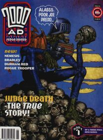
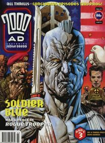
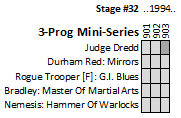

after Shakespeare
after Hicklenton
after a lack of fiber
|  | |
 |
| Prog 901 by Dermot Power after Shakespeare |
Prog 902 by Clint Langley after Hicklenton |
Prog 903 by Chris Weston after a lack of fiber |
This was a second attempt at that idea from progs 850-851 to do a super-tight run of thrills: this time a three-parter. I guess the idea never took off, as it never happens again.
Judge Dredd
Judge Death: The True Story is a light, frothy two-parter with far too many gradient-fill backdrops in which Comedy Death briefly goes back in time to 20th century Bexhill. It sounds ripe, but is a damp squib and only manages to fill two of the three progs. The third prog gives us Part Exchange, where muggers and organ leggers have joined forces to optimize their business practices.
Tis inter-planetary mega-epic crossover time next stage as we quest into the Wilderlands...
Durham Red: Mirrors
Navel-gazing imagineering of what it means to be Durham Red, with a dream sequence that's not too far off the plot of 1998's The Scarlet Cantos. As with most dreams, ultimately nothing happens.
Durham has some one-offs in upcoming specials before another mini-series in '95, but this tells us to look out for her next in Strontium Dogs (also in '95)...
Rogue Trooper [Fr1day Supper]: G.I. Blues
Retcon update: as with the return of the chips, now the Norts and Southers are suddenly back in the story, and Fr1day "knifes" his hair into a Rogue-hawk. The story is an intriguing three-parter (with gorgeous Chris Weston art) whereby Fr1day actually loses a fight and ends up in the OR.
Fr1day's back in '95...
Bradley: Master Of Martial Arts
The Karate Kid, but with Bradley and dominoes.
Bradley ends his run in the 1995 Yearbook with Bradley & the Baby Sitter.
Nemesis: Hammer of Warlocks
This is the history of Nemesis in three parts. Otherwise, it serves only as a precurser to a new book slated to begin in 1995...
...which doesn't get published until 1999...